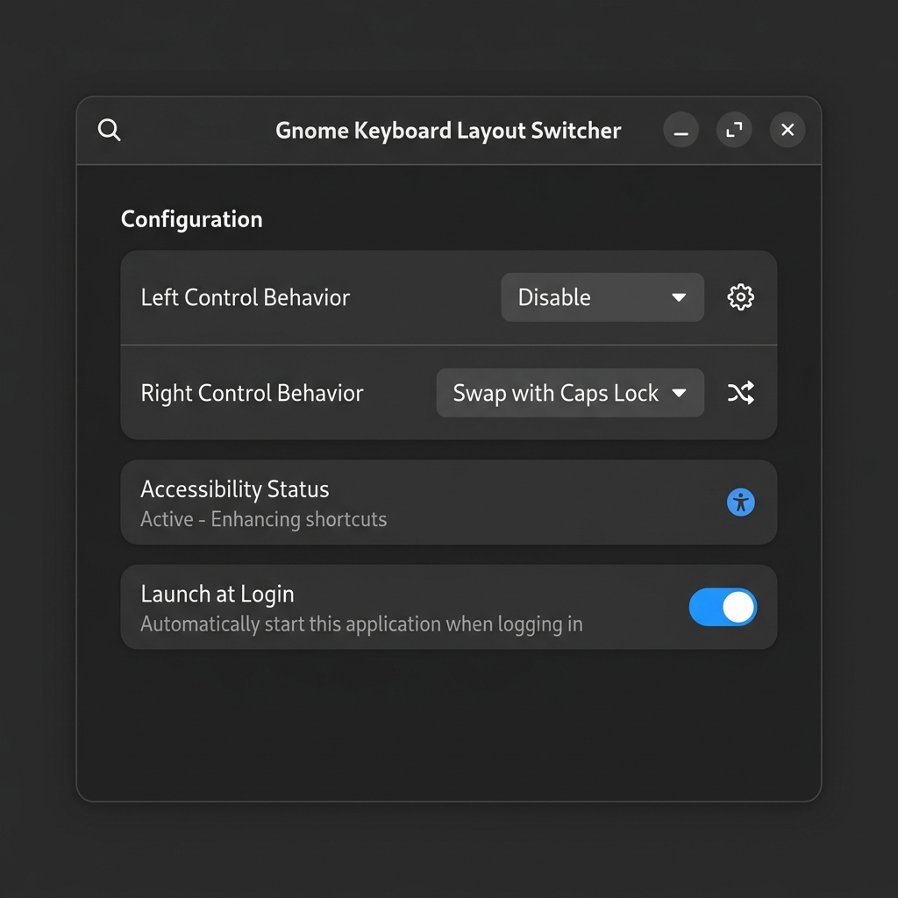

A lightweight background service to switch layout behaviors: tap Left Control to set English, and tap Right Control to cycle other layouts. Fast, native GTK4 config, Wayland-ready.

Deploy layouts switcher daemon directly via terminal
$ wget https://github.com/OleksiyM/LinuxLngSwitcher/releases/latest/download/gnome-lng-switcher-x86_64.tar.gz $ tar -xzf gnome-lng-switcher-x86_64.tar.gz $ chmod +x gnome-lng-switcher $ sudo usermod -aG input $USER $ ./gnome-lng-switcher
A native, responsive system-wide background utility designed with Libadwaita styling principles.
Standalone taps switch layouts instantly. Standard Control modifier operations (like Ctrl+C / Ctrl+V) are preserved and function as usual.
Fully compliant with modern Linux display servers. Listens directly to `/dev/input` events, avoiding limitations of window managers.
An easy-to-use native settings interface that adapts to light/dark themes. Save config directly or schedule service auto-start at login.
Follow these quick configurations steps to get layout switching running on your workstation.
Make sure you have GTK4 and Libadwaita development packages installed on your Linux system:
sudo apt update && sudo apt install -y libgtk-4-dev libadwaita-1-dev build-essential pkg-config
sudo dnf install -y gtk4-devel libadwaita-devel pkgconfig
To capture standalone control keys, the utility needs read permissions for keyboard events in `/dev/input` without requiring `sudo`:
input group:sudo usermod -aG input $USER
Modern GNOME Shell blocks programmatic layout switches by default. We install a tiny GNOME extension helper to act as a bridge:
./gnome-lng-switcherRun the app settings window again to start the daemon process and toggle preferences:
./gnome-lng-switcher